Questão 1 · Avaliação da vitalidade f etal · 4000165648Primigesta de 25 anos de idade, 39 semanas de gestação, está em trabalho de parto há 10 horas. A analgesia peridural foi instalada há 6 horas. No momento 8 cm de dilatação do colo uterino, inalterado há 2 horas. Dinâmica uterina com 5 contrações fortes em 10 minutos. Cardiotocogra a com BCF de 140 bpm, variabilidade diminuída, sem acelerações transitórias, nem desacelerações. Na inspeção, observa-se a figura a seguir. Qual é a conduta obstétrica?

A Sondagem vesical.
B Ocitocina endovenosa.
C Complementar analgesia.
D Cesárea imediata.
Questão 2 · Avaliação da vitalidade f etal · 4000165647Gestante de 17 anos de idade, com 40 semanas e 3 dias de gestação comparece assintomática para controle de vitalidade. Ao exame clínico: PA 110x75 mmHg, FC 78 bpm, altura uterina 36 cm, toque com colo amolecido, grosso, posterior, pérvio para 2 cm, apresentação cefálica no plano -2 de DeLee. Na avaliação ultrassonográ ca, feto com tônus preservado, índice de líquido amniótico de 4.6 cm, movimentos fetais e respiratórios presentes. Cardiotocografia apresentada. Qual é a conduta obstétrica?

A Indução do parto com ocitocina.
B Reavaliação de vitalidade fetal em 48 horas.
C Parto cesáreo segmentar transversa.
D Maturação do colo uterino com prostaglandina.
Revisar: possível letra faltando em enunciado
Questão 3 · Partograma · 4000165646Mulher de 22 anos de idade, secundigesta com um parto cesáreo anterior com recém-nascido de 2632g há 4 anos. Chega ao pronto atendimento com dor em hipogástrio. Hoje está com 38 semanas e 2 dias de gestação e o pré-natal transcorreu sem intercorrências. Ao exame: PA 110x72 mmHg, FC 88 bpm, dinâmica uterina presente de 3 contrações em 10 minutos, BCF 144 bpm, altura uterina de 35 cm, toque com colo no pérvio para 6 cm, apresentação cefálica, alta e xa, bolsa integra, amnioscopia líquido claro com grumos grossos. Após análise do partograma, qual o diâmetro que estaria impedindo a descida da apresentação?
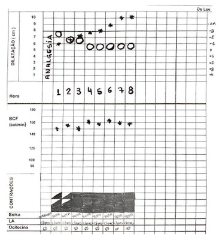
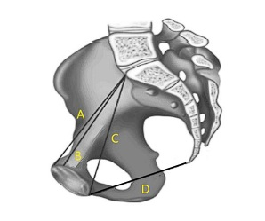
A A.
B B.
C C.
D D.
Questão 4 · Covid na gestação · 4000165643Gestante de 25 anos de idade, 31 semanas e 2 dias de gestação, chega ao pronto atendimento com queixa de coriza, tosse e febre há 5 dias. Hoje amanheceu com falta de ar. Nega doenças prévias. Ao exame clínico, REG, descorada+/4, hidratada, FC= 122 bpm; T= 37,9°C, Saturação 89%, bulhas rítmicas em dois tempos sem sopros, murmúrios vesiculares presentes e diminuídos em hemitórax direito roncos e sibilos bilaterais, altura uterina de 30cm, BCF presente e rítmico, dinâmica uterina ausente, tônus uterino normal. Durante o atendimento inicial foi realizada a seguinte cardiotocografia: Além de ofertar oxigênio, qual é a conduta obstétrica?
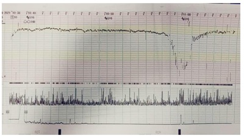
A Manter monitorização fetal.
B Indicar cesárea imediata
C Iniciar indução do parto.
D Inibir trabalho de parto prematuro.
Questão 5 · Segundo período período expulsivo · Obstetrícia · 4000165642Parturiente de 38 anos de idade, secundigesta com um parto normal há 10 anos, 39 semanas e 2 dias de gestação encontra- se em trabalho de parto há 5 horas, com analgesia de parto há uma hora. Refere pré-natal sem intercorrências, última ultrassonogra a obstétrica foi com 35 semanas de gestação, com feto único em apresentação cefálica, dorso à esquerda, peso fetal estimado de 3180g (percentil 95 de Hadlock), placenta fúndica, e índice de líquido amniótico de 18. No momento do parto observa-se a seguinte situação: Qual é a primeira manobra obstétrica que deve ser realizada nesse momento?
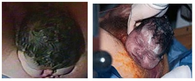
A Anteriorizar o dorso fetal.
B Fraturar a clavícula fetal.
C Hiperfletir as coxas da parturiente.
D Realizar manobra de Zavanelli.
Questão 6 · Sangramento primeira metade · 4000165641Mulher de 28 anos de idade, chega ao Pronto-Socorro com queixa de dor de forte intensidade em hipogástrio acompanhada de sangramento vaginal de pequena quantidade. Na anamnese relata um abortamento espontâneo há 18 meses. Refere data da última menstruação em 08/10/2021. Refere ser diabética tipo I há 15 anos. Ao exame clínico: descorada ++/4, PA 90 x 51 mmHg, FC 110 bpm, FR 23 rpm. Dor à palpação profunda com sinal de descompressão brusca presente em fossa ilíaca direita. No toque vaginal o colo do útero é posterior, levemente amolecido, impérvio e com dor à mobilização. Foram recebidos os seguintes resultados de exames: Hb 9,1g/dl, Ht 28,2%, leucócitos 12.83mil/mm³, plaquetas 175 mil/mm3 e betaHCG 1820 mUI/ml. A imagem do ultrassom é apresentada. Com base no quadro clínico e ultrassonográfico, qual é o diagnóstico?
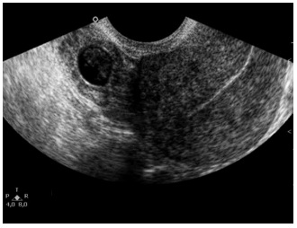
A Abortamento tubário.
B Gravidez de sítio desconhecido.
C Gravidez ectópica.
D Gravidez incipiente.
Questão 7 · Hemorragias pós parto HPP e rotura uterina · 4000165639Gestante de 30 anos de idade, primigesta, 33 semanas de gestação e portadora de hipertensão arterial crônica. Está em uso de metildopa 1,0g por dia e chega ao Pronto-Socorro com queixa de sangramento vaginal e dor abdominal há 1 hora. Ao exame físico: descorada ++, PA 148 x 90 mmHg, FC 118 bpm, altura uterina 37 cm; BCF 102 bpm. Na palpação não há distinção das partes fetais, tônus uterino aumentado. Ao exame especular colo sem lesões, com presença de sangue escurecido em fundo de saco. Ao toque vaginal, colo médio, medianizado, pérvio para 3 cm, bolsa íntegra e tensa. No puerpério imediato, paciente apresentou sangramento uterino importante havendo necessidade de hemotransfusão. Após administração de ácido tranexâmico e uterotônicos, sem resposta. Houve indicação de intervenção cirúrgica, com o seguinte achado operatório. Qual é a próxima conduta na sequência de atendimento cirúrgico?
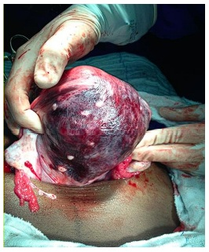
A Histerectomia total.
B Sutura compressiva.
C Ligadura de artérias hipogástricas.
D Observação.
Questão 8 · Obstetrícia · Eclâmpsia · 4000165637Gestante de 30 anos de idade, primigesta, 33 semanas de gestação e portadora de hipertensão arterial crônica. Está em uso de metildopa 1,0g por dia e chega ao Pronto-Socorro com queixa de sangramento vaginal e dor abdominal há 1 hora. Ao exame físico: descorada ++, PA 148 x 90 mmHg, FC 118 bpm, altura uterina 37 cm; BCF 102 bpm. Na palpação não há distinção das partes fetais, tônus uterino aumentado. Ao exame especular colo sem lesões, com presença de sangue escurecido em fundo de saco. Ao toque vaginal, colo médio, medianizado, pérvio para 3 cm, bolsa íntegra e tensa. Qual é a conduta obstétrica nesse momento?
A Analgesia de parto.
B Avaliação de vitalidade fetal.
C Amniotomia imediata.
D Inibição de trabalho de parto prematuro.
Questão 9 · Tireotoxicose gestacional transitória · Avaliação f uncional e ultrassonográf ica da glândula tireoide · 4000165635Mulher de 31 anos de idade, secundigesta, nulípara, chega ao pronto atendimento referindo náuseas e vômitos intensos (3 a 4 episódios por dia). Refere data da última menstruação em 23/09/2021. Portadora de distúrbio de ansiedade em uso de Sertralina 100 mg por dia, chegou bastante agitada. Ao exame clínico, paciente em regular estado geral, desidratada 2+/ 4+, PA 90x62 mmHg, FC 124 bpm, rítmico, Saturação 98%. Exame ginecológico mostrou conteúdo vaginal siológico, colo impérvio e útero compatível com a idade gestacional. Foram colhidos os seguintes exames: Hb 11,4 g/dl; Ht 34,2%, Leucócitos 10,66mil/mm³; Plaquetas 268 mil/mm³; TSH 0,02 UI/ml, T4 total 8,2 mcg/dl; TGO 19U/L; TGP 28U/L; Cr 0,51 mg/dl; U 15 mg/dl; Na 136 mEq/L; K 3,0 mEq/L; PCR 0,06 mg/L; gasometria venosa (pH 7,47; pO₂ 80,1 mmHg; pCO₂ 29,2 mmHg; HCO₃ 29,1 mmol/L; BE +10). Eletrocardiograma: Após estabilização do quadro agudo, qual é a conduta mais adequada?
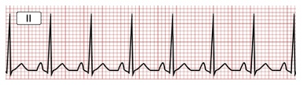
A Repetir TSH.
B Introduzir Propiltiouracil.
C Introduzir Propranolol.
D Introduzir Levotiroxina.
Questão 10 · Causas de alcalose respiratória · Tireotoxicose gestacional transitória · 4000165634Formas de reposição de potássio Mulher de 31 anos de idade, secundigesta, nulípara, chega ao pronto atendimento referindo náuseas e vômitos intensos (3 a 4 episódios por dia). Refere data da última menstruação em 23/09/2021. Portadora de distúrbio de ansiedade em uso de Sertralina 100 mg por dia, chegou bastante agitada. Ao exame clínico, paciente em regular estado geral, desidratada 2+/ 4+, PA 90x62 mmHg, FC 124 bpm, rítmico, Saturação 98%. Exame ginecológico mostrou conteúdo vaginal siológico, colo impérvio e útero compatível com a idade gestacional. Foram colhidos os seguintes exames: Hb 11,4 g/dl; Ht 34,2%, Leucócitos 10,66mil/mm³; Plaquetas 268 mil/mm³; TSH 0,02 UI/ml, T4 total 8,2 mcg/dl; TGO 19U/L; TGP 28U/L; Cr 0,51 mg/dl; U 15 mg/dl; Na 136 mEq/L; K 3,0 mEq/L; PCR 0,06 mg/L; gasometria venosa (pH 7,47; pO₂ 80,1 mmHg; pCO₂ 29,2 mmHg; HCO₃ 29,1 mmol/L; BE +10). Eletrocardiograma: Além da prescrição de antiemético e hidratação, qual é a prescrição mais adequada no pronto atendimento?

A Reposição de bicarbonato endovenosa.
B Ofertar oxigênio em máscara aberta.
C Reposição de potássio endovenosa.
D Administrar diurético endovenoso.
Questão 11 · Ginecologia · Fertilização in vitro · 4000165633Mulher de 30 anos de idade está em processo de fertilização in vitro. Recebeu estimulação hormonal para estimulação ovariana, com boa resposta e o desenvolvimento de múltiplos folículos/oócitos e desenvolvimento acentuado de ambos os ovários. Qual a principal complicação associada a este procedimento?
A Endometrite.
B Ascite e derrame pleural.
C Ooforite.
D Gemelaridade.
Questão 12 · Bisf osf onatos · Terapia hormonal da menopausa · Causas f uncionais · 4000165632Mulher, 23 anos, atleta pro ssional de atletismo apresenta fratura de stress tibial. Refere que se encontra em amenorreia há 2 anos. Nuligesta, em uso de preservativo como contraceptivo. Teste de gravidez negativo. Na avaliação da fratura observou-se que apresenta baixa densidade mineral óssea. Além do tratamento específico da fratura, a paciente foi orientada para reprogramação de seus treinos e adaptação da dieta para maior ingesta energética. Qual a conduta mais adequada?
A Contraceptivo hormonal combinado.
B Bifosfonato.
C Ingesta de doses elevadas de cálcio quelado.
D Musculação.
Questão 13 · Ginecologia · Tratamento · 4000165631Mulher, 18 anos de idade, refere cólica menstrual importante, iniciando um dia antes do uxo menstrual. Refere ciclos menstruais regulares de 30 dias com duração de 4 dias. Menarca 12 anos e aparecimento das cólicas desde os 16 anos. Iniciou vida sexual aos 17 anos, faz uso de preservativo irregularmente. Nega dor à relação sexual, refere orgasmo. Exame clínico geral sem alterações. Exame ginecológico com genitais externos sem alteração, especular conteúdo vaginal habitual, colo epitelizado. Toque vaginal útero em anteverso exão, volume habitual, móvel, não doloroso, regiões anexiais livres e indolores. Qual é o tratamento inicial adequado?
A Gestriona.
B Azitromicina.
C DIU progesterona.
D Ácido mefenâmico.
Questão 14 · Intoxicação · 4000165630Mulher, 60 anos de idade, havia recebido o diagnóstico de osteopenia. Foi orientada a realizar exercícios físicos, consumir alimentos ricos em cálcio e suplemento de vitamina D. Por influência de redes sociais, iniciou por conta própria a ingestão de 40 mil unidades de vitamina D por dia. Qual alternativa reflete a consequência desta suplementação em longo prazo?
A Aumento da massa óssea.
B Hipotensão arterial.
C Nefrocalcinose.
D Hipocalcemia.
Questão 16 · Câncer de mama · 4000165628Mulher, 60 anos, passa em consulta de rotina anual. Hipertensa em uso de anlodipino e diabetes controlado com metformina. Ao exame clínico das mamas observa-se linfonodos endurecidos, coalescidos, pouco móveis em palpação da axila direita e supraclavicular direita. A mamogra a é apresentada. A principal hipótese diagnóstica é confirmada. Qual é a conduta adequada?

A Mastectomia radical.
B Quimioterapia primária.
C Radioterapia primária.
D Quadrantectomia com pesquisa de linfonodo sentinela.
Questão 17 · Anatomia da parede abdominal · Ginecologia · 4000165627Mulher, 45 anos de idade, é submetida a histerectomia total abdominal. Após a retirada do útero, o cirurgião sutura a cúpula vaginal através da aproximação da mucosa vaginal com pontos separados de poligalactina 00. Qual é o próximo tempo cirúrgico?
A Sutura dos ligamentos útero-sacros à cúpula vaginal.
B Fixação dos ligamentos pubo-vésico-cervicais à cúpula vaginal.
C Fixação dos ligamentos redondos à cúpula vaginal.
D Sutura do infundíbulo pélvico à cúpula vaginal.
Questão 18 · Ginecologia · Fisioterapia · 4000165626Mulher, 38 anos de idade, refere eventual perda urinária aos grandes esforços. Apresenta antecedente de 2 gestações e 2 partos normais, o último há 8 anos. Ciclos menstruais regulares e uso de preservativo. Nega cirurgias ou uso de medicamentos. Exame físico geral sem alterações. Exame ginecológico: discreta cistocele à Manobra de Valsalva, sem perda de urina observável. Especular com conteúdo vaginal habitual, colo do útero epitelizado. A orientação para controle inicial da perda de urina é a realização de exercícios de Kegel. Nesta prática, qual é a musculatura que deve ser exercitada?
A Esfíncter externo vesical.
B Pubo-coccígea.
C Obturador interno.
D Detrusor.
Questão 20 · Ginecologia · Amenorreia secundária de causa hipotalâmica · 4000165624Mulher, 43 anos de idade, queixa-se de ausência de menstruação há 60 dias. Realizou teste de gravidez com resultado negativo. Refere que apresentava ciclos menstruais regulares, com intervalos de 30 dias e duração de 4 dias. Utiliza preservativo masculino como contracepção. Apresenta 2 gestações com 2 partos normais, último há 6 anos. Apresenta antecedente de ooforectomia direita há 20 anos por torção anexial. Hipertensão arterial leve em uso de anlodipino 5mg há 4 anos. Há 4 meses em uso de sulpirida por quadro de depressão. Exame físico geral: FC 82, PA 120 x 80 mmHg, FR 12 irpm; acne leve em face e discreto rash cutâneo em tórax. Exame de mamas: palpação broglandular, discretamente dolorida, sem nódulos ou retrações, regiões axilares sem linfonodos palpáveis, expressão areolo-papilar sem alterações. Genitais externos tróficos; especular colo epitelizado, conteúdo vaginal habitual. Toque vaginal útero AVF, móvel, indolor, regiões anexiais livres e sem massas identificáveis. Considerando as informações clínicas, qual é a principal hipótese diagnóstica?
A Falência prematura ovariana.
B Gravidez psicológica.
C Síndrome ovários policísticos.
D Bloqueio de gonadotrofinas.
Questão 21 · Retalhos · Cirurgia · 4000165623Homem, 94 anos de idade, notou aparecimento de lesão crostosa e elevada na região parietal direita, de crescimento gradativo, há 6 meses. A biópsia prévia confirmou carcinoma espinocelular super cialmente invasivo, bem diferenciado. A imagem a seguir mostra a demarcação das margens oncológicas para carcinoma espinocelular, tendo como margem profunda a ressecção da gálea aponeurótica e o periósteo. Neste caso, qual é a melhor técnica para reconstrução e cobertura do defeito?
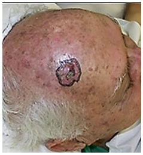
A Retalho cutâneo microcirúrgico.
B Retalho cutâneo de transposição.
C Enxertia de pele espessura parcial.
D Enxertia de pele espessura total.
Questão 22 · Ortopedia · Principais f raturas associadas · 4000165622Menino, 5 anos de idade, caiu da bicicleta. Ao exame físico tem dor e deformidade do cotovelo. No serviço de urgência, foi realizada a radiografia apresentada. Qual é o nervo mais acometido nesse tipo de fratura?
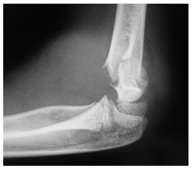
A Nervo ulnar.
B Nervo radial.
C Nervo interósseo anterior.
D Nervo interósseo posterior.
Questão 23 · Tratamento cirúrgico curativo · 4000165621Homem, 65 anos de idade, com hepatite C e cirrose diagnosticados há 6 anos. Identi cou nódulo hepático em ultrassom abdominal de seguimento. A hepatite C está com resposta virológica sustentada. Realizada endoscopia digestiva alta que não identi cou varizes de esôfago. Tem função hepática preservada (Child-Pugh A). Ao exame, está anictérico, sem encefalopatia e não apresenta estigmas de hepatopatia crônica. Palpação abdominal sem alterações. Os exames laboratoriais não apresentam alterações e a alfafetoproteína é normal. Realizada tomogra a computadorizada que evidenciou nódulo bem delimitado entre os segmentos 2 e 3 medindo 3,5 x 3,3 cm. As fases contrastadas evidenciaram lesão hipervascular com uxo rápido e homogêneo na fase arterial, seguido de lavagem (“washout”) nas fases mais tardias. Qual a afirmativa correta?
A Alfafetoproteina normal exclui o diagnóstico de carcinoma hepatocelular.
B A função hepática preservada autoriza a hepatectomia parcial.
C A biópsia da lesão é essencial para a confirmação diagnóstica e definição da conduta.
D A inclusão em fila de transplante hepático está contraindicada.
Questão 24 · Aneurisma de Aorta Abdominal · Cirurgia · Ruptura de Aneurisma da Aorta Abdominal · 4000165620Homem, 60 anos de idade, com antecedente de tabagismo e hipertensão, procura o hospital com queixa de dor abdominal súbita, de forte intensidade, irradiada para anco e lombar à esquerda, há 4 horas. Relata que teve um quase desmaio, com sudorese fria no momento do início da dor, e se recuperou após alguns minutos. Ao exame físico, apresenta-se normotenso, corado e bem perfundido, com pulsos palpáveis em todas as extremidades. O exame clínico do abdome revela massa pulsátil dolorosa. Qual é a principal hipótese diagnóstica?
A Aneurisma de aorta roto, tamponado.
B Dissecção aguda de aorta abdominal.
C Trombose aguda da aorta abdominal.
D Aneurisma de aorta de crescimento recente.
Questão 25 · Manif estações Clínicas · Tratamento Cirúrgico do Megaesôf ago NãoAvançado · 4000165619Mulher, 46 anos de idade, refere dor torácica e regurgitação após refeições há 2 anos, com piora progressiva. Quando tem dor, apresenta melhora após a ingestão de líquidos. A queixa é mais intensa após refeições sólidas, evitando alimentos com esta consistência. Associadamente tem regurgitação durante o sono. Perdeu 5 Kg (IMC atual: 20 kg/m²). Realizou endoscopia digestiva alta, com achado de esofagite erosiva distal leve (grau A de Los Angeles) e gastrite erosiva leve de antro. Iniciou uso pantoprazol sem melhora dos sintomas. Retornou à consulta, quando foi solicitada uma radiografia contrastada de esôfago, estômago e duodeno. Considerando a principal hipótese diagnóstica, qual é o tratamento?
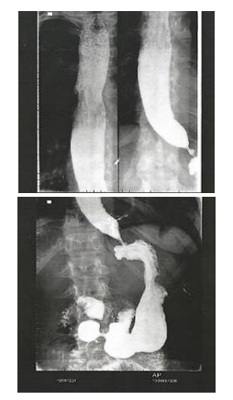
A Esofagectomia subtotal.
B Hiatoplastia e fundoplicatura parcial.
C Hiatoplastia e fundoplicatura total.
D Cardiomiotomia e fundoplicatura parcial.
Questão 26 · Complicações Gastrointestinais · Transtorno Alimentares · Cirurgia · 4000165618Mulher, 33 anos de idade, foi submetida a gastroplastia em Procura o serviço de urgência com queixa de disfagia, regurgitação de alimentos sólidos, há 1 mês, com piora progressiva. Ao exame físico: bom estado geral, desidratada, corada, abdome flácido e indolor à palpação. Qual é a principal hipótese diagnóstica?
A Transtorno alimentar (bulimia).
B Hérnia interna.
C Estenose da enteroentero anastomose.
D Estenose da gastroenteroanastomose.
Questão 27 · Pleurodese · 4000165617Homem, 67 anos de idade, está em tratamento paliativo para neoplasia de reto estadio IV. Tem diabete melito e é ex- tabagista. Há 4 semanas, foi submetido a toracocentese de alívio, com retirada de 1100 mL. Houve melhora dos sintomas e expansão pulmonar completa em radiogra a de controle. Retorna ao ambulatório com queixa de há 1 semana recidiva da dispneia e tosse seca. Nega dor torácica e febre. Apresenta KPS (performance status de Karnofsky) de 60. Abaixo a radiografia de tórax atual. Análise do líquido pleural confirmou etiologia neoplásica. Qual é a conduta nesta situação?

A Repetir a toracocentese esvaziadora.
B Drenagem com cateter pleural e pleurodese.
C Drenagem com cateter pleural e manter até diminuir o débito.
D Toracotomia com pleurectomia parietal ampla.
Questão 28 · Neoplasias Testiculares · Cirurgia · 4000165616Homem, 28 anos de idade, procura atendimento médico com queixa de dor e aumento do volume do testículo direito, há dois meses. Nega trauma local. Ao exame físico apresenta testículo direito aumentado cerca de 5 vezes o normal, endurecido e doloroso. Não há hiperemia da pele escrotal e o epidídimo direito está normal. Realizou ultrassonogra a que mostrou o testículo direito com 13 cm no maior diâmetro, com componente sólido e heterogêneo, e áreas de necrose e hemorragia. O testículo esquerdo está normal. Indicada realização de tomogra a de tórax e abdome. Qual é a conduta neste momento?
A Coleta de alfa-feto proteína, DHL e betaHCG; orquiectomia por inguinotomia.
B Coleta de CEA, CA72.4 e DHL; biópsia do testículo com agulha grossa.
C Coleta de alfa feto proteína, DHL e betaHCG; biópsia do testículo com agulha grossa.
D Coleta de CEA, CA72.4 e DHL; orquiectomia por inguinotomia.
Questão 29 · Atresia do Esôf ago e Fístula Traqueoesof ágica · Cirurgia · 4000165615Recém-nascido de termo apresenta salivação abundante e impossibilidade de passagem da sonda orogástrica na sala de parto. A ausculta cardiopulmonar é normal e não se notam outras alterações ao exame físico. Qual é o exame indicado neste momento?
A Broncoscopia.
B Tomografia de tórax e abdome com contraste oral.
C Ultrassonografia de tórax e abdome.
D Radiografia de abdome.
Questão 30 · Complicações · 4000165614Homem, 44 anos de idade, foi submetido a tireoidectomia total há 6 horas. A enfermagem relata que o paciente está sentindo dificuldade para “puxar o ar”, usando musculatura acessória e se encontra cada vez mais agitado e sentado no leito. As imagens apresentadas ilustram a inspeção cervical ao você chegar (A) e nos minutos que se seguiram à sua avaliação (B). Qual é a conduta neste momento?
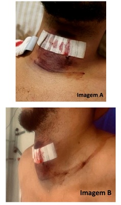
A Abertura imediata da sutura de pele e fáscio-muscular no leito.
B Traqueostomia de emergência no centro cirúrgico.
C Compressão do trígono carotídeo e estabilização.
D Cricotireoidostomia por punção no leito.
Questão 31 · Sequência Rápida de Intubação SRI · Préoxigenação · 4000165613Homem, 71 anos de idade, foi admitido no serviço de emergência com quadro de dor e distensão abdominal e vômitos. Ao exame físico encontrava-se eupneico, com saturação de oxigênio de 92% em ar ambiente e distensão abdominal. Realizada tomografia de abdome apresentada. Indicada laparotomia exploradora. Exames laboratoriais séricos revelam Hb: 9,7 g/dL; potássio: 2,9 mEq/L e sódio: 140 mEq/L; Cr: 1,9 mg/dL e U: 90 mg/dL. Qual é a melhor conduta no tratamento da via aérea para a anestesia geral?
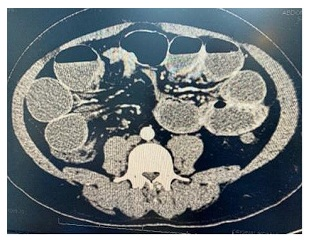
A Ventilar com máscara facial em pressão positiva e oxigênio 100%.
B Respirar com oxigênio a 100% e usar técnica de sequência rápida.
C Respirar com oxigênio a 100% e instalar a máscara laríngea.
D Máscara facial em oxigênio 100% e instalar cânula de Guedel.
Questão 32 · Avaliação Inicial Vias aéreas Ventilação e Choque · Trauma Abdominal Fechado · Cirurgia · 4000165612Homem, 41 anos de idade, foi vítima de atropelamento por trem. Na admissão no serviço de emergência, encontrava-se: A: Intubado; Saturação de O₂ 85%. B: Ausculta pulmonar abolida à esquerda, com hipertimpanismo à percussão. C: PA: 70x40 mmHg; FC: 140bpm; Tempo de enchimento capilar lenti cado. FAST positivo em todos os quadrantes do abdome e negativo no pericárdio. D: Escala de Coma de Glasgow de 3 (sedado e intubado). Pupilas anisocóricas (midríase à direita). E: Amputação traumática de perna esquerda com curativo encharcado de sangue. Com relação às lesões do doente, qual é a sequência correta do tratamento?
A 1. Drenagem torácica; 2. Torniquete em membro inferior; 3. Tomografia de crânio; 4. Laparotomia exploradora.
B 1. Tomografia de crânio; 2. Drenagem torácica; 3. Laparotomia exploradora; 4. Torniquete em membro inferior.
C 1. Drenagem torácica; 2. Torniquete em membro inferior; 3. Laparotomia exploradora; 4. Tomografia de crânio.
D 1. Torniquete em membro inferior; 2. Drenagem torácica; 3. Tomografia de crânio; 4. Laparotomia exploradora.
Revisar: possível letra faltando em enunciado
Questão 33 · Trauma Abdominal Penetrante · Cirurgia · 4000165611Homem, 19 anos de idade, foi vítima de ferimento por arma branca no dorso. Na sala emergência encontrava-se: A: Via aérea pérvia. Saturação de oxigênio de 98% em ar ambiente. B: Ausculta pulmonar sem alteração. C: PA: 140 x 80 mmHg; FC: 90 bpm; Tempo de enchimento capilar normal. FAST abdominal negativo. D: Escala de Coma de Glasgow: 15. E: Ausência de dor abdominal; sondagem vesical com diurese clara. Toque retal sem alterações. Ferimento no dorso conforme imagem a seguir. Realizada radiogra a de tórax na sala de emergência, que não evidenciou alterações. Realizada hemostasia local. Qual é a melhor conduta neste momento?
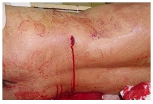
A Sutura do ferimento e profilaxia para tétano.
B Laparoscopia exploradora.
C Tomografia de abdome.
D Toracoscopia.
Questão 34 · Complicações Locais · Tratamento · 4000165610Mulher, 64 anos de idade, diabética, foi submetida a correção de hérnia incisional através de laparotomia mediana. A técnica operatória empregada foi a colocação de tela de polipropileno sobre a aponeurose (onlay). Na figura a seguir é possível observar o descolamento do tecido subcutâneo da aponeurose e a xação da tela. Foram colocados 2 drenos fechados devido ao descolamento. Além do seroma, qual é a complicação operatória mais frequente deste procedimento?
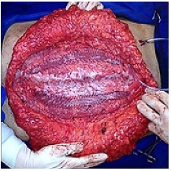
A Necrose de pele e subcutâneo.
B Infecção crônica da tela.
C Rejeição da tela.
D Deiscência da aponeurose.
Questão 35 · Complicações Locais · Cirurgia · 4000165609Mulher, 47 anos de idade, foi submetida a laparotomia exploradora devido a obstrução intestinal por tumor no cólon direito. Foi realizada colectomia direita com ileostomia terminal. Tem diabete melito, hipertensão arterial não controlada e é tabagista. No 4º pós-operatório apresentou saída de líquido serohemático pela ferida operatória. Hoje, encontra-se no 7o pós-operatório e a imagem da ferida está representada pela imagem a seguir. Nesta paciente, quais são os fatores de risco para esta complicação?
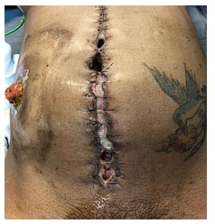
A Cirurgia de urgência, ileostomia, hipertensão arterial.
B Cirurgia de urgência, doença neoplásica, tabagismo.
C Diabete melito, hipertensão arterial, tabagismo.
D Ileostomia, doença neoplásica, diabete melito.
Questão 36 · Antibioticoprof ilaxia Cirúrgica · Cirurgia · 4000165608Mulher, 43 anos de idade, foi admitida no serviço de emergência devido a dor no hipocôndrio direito. Ao exame físico apresentava sinal de Murphy positivo.Tem hipertensão arterial e diabete melito controlados com medicamentos. Realizados exames bioquímicos que evidenciaram leucograma de 14.373/mm³ e PCR de 45 mg/L. O ultrassom evidenciou espessamento e delaminação da parede da vesícula biliar, com cálculo impactado no infundíbulo. Foi submetida a colecistectomia laparoscópica que evidenciou intenso processo inflamatório perivesicular. Realizada punção da vesícula, com saída de bile escura. Neste cenário, qual é o tempo de antibiótico preconizado?
A Até 24 horas.
B 72 horas.
C 5 dias.
D 7 dias.
Questão 37 · Exames Complementares · Cirurgia · 4000165607Mulher, 31 anos de idade, com obesidade grau 1 está internada devido a pancreatite aguda leve. Evoluiu com melhora da dor, 2 dias após o início dos sintomas. Tem diabete melito tipo 2 e hipotireoidismo. Foi submetida a ultrassonogra a de abdome que evidenciou vesícula biliar de paredes nas, sem cálculos e com via biliar de 0,4 cm. Nega uso abusivo de álcool. Qual é o próximo passo?
A Realizar ecoendoscopia.
B Colecistectomia com colangiografia.
C Tratamento com ácido ursodesoxicólico.
D Realizar tomografia de abdome.
Questão 38 · Tratamento · Cirurgia · 4000165606Homem, 76 anos de idade, está internado em Unidade de Terapia Intensiva de Hospital Terciário devido a pneumonia bacteriana. Evoluiu há 1 dia com dor abdominal inespecífica, mais acentuada no abdome superior. Ao exame físico: Regular estado geral, confuso, FC: 90bpm; PA: 90 x 60 mmHg (uso de noradrenalina), Sat.O₂: 92% (máscara de oxigênio), FR: 22 ipm. Abdome: distensão abdominal difusa e dor mais intensa em hipocôndrio direito. Exames laboratoriais: Hb 11,5g/dL; Leucócitos 19.500 mm³; Creatinina: 2,7 mg/dL; Ureia: 98 mg/dL; PCR 170 mg/dL; TGO 125U/L; TGP 160 U/L; FA: 230; GGT: 198; Bilirrubina total: 3,8. Calculado o escore de APACHE2: 19. Realizada tomogra a de abdome que evidenciou distensão da vesícula biliar com borramento e densi cação dos planos adjacentes, bile espessa e cálculo de 1 cm no infundíbulo, sem dilatação da via biliar. Qual é a conduta mais adequada neste momento?
A Colangiografia endoscópica retrógrada com papilotomia.
B Colecistectomia por laparotomia com colangiografia.
C Colecistectomia laparoscópica com colangiografia.
D Drenagem percutânea transhepática da vesícula biliar.
Questão 39 · Abdome Agudo Obstrutivo · Cirurgia · 4000165605Homem, 62 anos de idade, é admitido no serviço de emergência devido a dor abdominal em cólica, vômitos e distensão abdominal há 4 dias. Última evacuação há 5 dias e, desde então, não elimina gases. Refere cólica abdominal há 3 meses, com vômitos esporádicos que melhorava com jejum e medicamento antiespasmódico. Tem hipertensão arterial controlada e nega operações abdominais prévias. Ao exame físico: Bom estado, desidratado, eupneico. Abdome: distendido, ruídos hidroaéreos aumentados, doloroso à palpação profunda sem irritação peritoneal. Toque retal: sem fezes na ampola. Exames laboratoriais: Hb: 10,9 g/dL; Ht: 38%; Creatinina: 2,9 mg/dL; Ureia: 110 mg/dL. Demais exames sem alterações. Realizada a tomografia de abdome apresentada. Qual é a principal hipótese diagnóstica?


A Abdome agudo obstrutivo ao nível do sigmoide.
B Síndrome de Ogilvie.
C Abdome agudo obstrutivo ao nível de delgado.
D Íleo paralítico.
Questão 41 · DNPM Desenvolvimento NeuroPsicoMotor · Pediatria · 4000165603Recém-nascido, 40 semanas de idade gestacional, sexo masculino, nasceu de parto cesárea por falha de indução, Apgar 9/10, peso de 2.950 g. Mãe primigesta, 20 anos, não fez pré-natal e relata ser usuária habitual de drogas ilícitas. O menor está sendo examinado no alojamento conjunto, com 72 horas de vida, e alguns dados do exame clínico estão apresentados nas imagens abaixo. Qual é a conduta indicada face aos dados clínicos apresentados?


A Apuração de maus-tratos no alojamento conjunto.
B Solicitação de cariótipo.
C nvestigação neurológica complementar.
D Alta hospitalar com seguimento de rotina em UBS.
Questão 42 · Exame f ísico do Recémnascido · Pediatria · 4000165602Recém-nascido, sexo feminino, 24 horas de vida, está no alojamento conjunto. Nascida com idade gestacional de 40 semanas e 2 dias, parto fórcipe, Apgar 8/9, peso de 3.950 g, com período expulsivo prolongado. Criança recebeu vacina de hepatite B, nitrato de prata ocular e vitamina K intramuscular. Pré-natal sem anormalidades. Ao exame clínico, criança em bom estado geral, e a inspeção da cabeça mostrou a presença de um abaulamento (Figura A), cujos limites anatômicos estão esquematicamente representados abaixo (figura B). Sem outras alterações significativas. Qual é a conduta, considerando a principal hipótese diagnóstica?

A Observação clínica e monitorização de icterícia.
B Punção ou drenagem da coleção serossanguinolenta.
C Realização de ressonância magnética de crânio.
D Realização de segunda dose de vitamina K intramuscular.
Questão 43 · Síndrome de GuillainBarré · Neurologia · Exames Complementares · 4000165601Pré-escolar, sexo feminino, 3 anos de idade, sem comorbidades prévias, é levada pela mãe ao Pronto-Socorro por queixa de recusa ao deambular, com choro intenso quando colocada em pé, referindo dor em membros inferiores bilateralmente. Nega febre, nega outras queixas, nega traumas. Refere que teve quadro diarreico há 15 dias, com duração de 3 dias, já resolvido. Ao exame clínico, demonstra dor à manipulação dos membros inferiores, com hipotonia muscular e força muscular grau III em porção distal e grau IV em porção proximal dos membros inferiores. Hiporre exia patelar bilateral. Membros superiores com força, sensibilidade e reflexos preservados. Sem outros achados significativos. Qual das alternativas abaixo apresenta os resultados de exames complementares compatíveis com a hipótese diagnóstica mais provável para o caso?
A Eletroencefalograma: traçado compatível com padrão de hipsarritmia.
B Líquor: 3 células/mm³, 0 hemácias/mm³, glicose: 63 g/dL, proteína: 187 mg/dL, bacterioscopia negativa.
C Tomografia de coluna lombossacra: invasão do canal vertebral e compressão medular.
D VHS: 100 mm/h, proteína C reativa: 120 mg/L; creatinofosfoquinase (CPK): 2.000 U/L.
Questão 44 · Pediatria · Orientações gerais de puericultura Sinais de alerta · 4000165600Pré-escolar, sexo masculino, 2 anos e 6 meses de idade, está em consulta ambulatorial de rotina em UBS. Mãe conta que, neste último ano, desde que a criança entrou na creche, cou gripada praticamente todo mês. Nos últimos 6 meses, a mãe refere que a criança precisou usar antibiótico cinco vezes (uma internação em UTI por pneumonia, três otites médias agudas e uma celulite em membro inferior direito). A mãe trouxe a radiografia de tórax realizada durante a internação em UTI: Além dessa internação, ocorreram outras duas, ambas em enfermaria: diarreia com desidratação grave aos 7 meses; celulite periorbitária secundária à sinusite bacteriana aos 2 anos de idade. Apresenta vacinação em dia seguindo o programa nacional de imunizações. Aceita bem todos os tipos de alimento, exceto carne. Recebeu vitamina A e D pro láticas até os 2 anos de idade, mas nunca recebeu sulfato ferroso pro lático, porque não gostava do gosto e sempre cuspia a medicação. O peso e a estatura atuais são idênticos aos de seis meses atrás, quando realizou a última consulta de puericultura. As curvas antropométricas estão representadas abaixo: Qual é a conduta prioritária na consulta atual com base no diagnóstico mais provável?
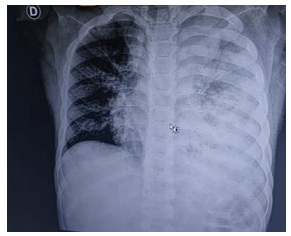
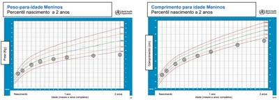
A Reorientar alimentação, coletar hemograma e perfil de ferro e marcar retorno breve para decidir sobre necessidade de sulfato ferroso em dose terapêutica.
B Orientar que as infecções são frequentes nesta faixa etária devido aos baixos níveis de IgA esperados para a idade, e que as infecções se intensificam com a entrada na creche.
C Dosar hormônios tireoidianos (TSH e T4 livre) e de crescimento (GH, IGF1 e IGF BP3) e encaminhar para seguimento com endocrinologista.
D Iniciar investigação com coleta de hemograma completo, imunoglobulinas séricas, complemento, sorologia para sarampo e encaminhar para imunologista.
Questão 45 · Conjuntivite Neonatal · Neonatologia · 4000165599Recém-nascido, sexo masculino, 19 dias de vida, está em consulta ambulatorial. Trata-se de recém-nascido de termo, parto vaginal hospitalar, mãe com 28 anos de idade, sem seguimento adequado no pré-natal. Nota-se edema palpebral bilateral, conjuntivas hiperemiadas e secreção ocular purulenta há um dia. Sem outras alterações significativas ao exame clínico. Qual é o diagnóstico mais provável?
A Conjuntivite por clamídia.
B Conjuntivite química por nitrato de prata.
C Conjuntivite gonocócica.
D Obstrução de ducto lacrimal.
Questão 46 · Síndrome nef rótica · 4000165598Escolar, sexo feminino, 6 anos de idade, portadora de síndrome nefrótica córtico-dependente, está internada em enfermaria de pediatria há 4 dias. A paciente apresentou sintomas compatíveis com resfriado comum iniciados há 1 semana e, no dia da internação, mãe relatava redução importante da diurese e lipotimia. O peso aferido na chegada foi de 31 kg (ganho de 6 kg em relação à última consulta). Hoje, a paciente está no quarto dia de internação, recebendo dieta hipossódica, infusão endovenosa de albumina humana uma vez ao dia (última dose ontem pela manhã) e prednisona oral. Está sem novas queixas, em bom estado geral, afebril e normotensa. Seguem abaixo: a tabela com a evolução dos exames laboratoriais na internação e o balanço hídrico registrado pela enfermagem nas últimas 24 horas. Qual é a afirmação correta com relação à programação a ser estabelecida?
A Segue apresentando indicação de albumina humana endovenosa diariamente.
B Tem indicação de receber diurético de alça duas a três vezes ao dia.
C Apresenta condições de alta hospitalar e seguimento ambulatorial.
D Tem indicação de receber soro de manutenção basal 100ml/100kcal, restrito em sódio.
Questão 47 · Reanimação neonatal · Pediatria · Reanimação neonatal em maiores de 34 semanas · 4000165597Você está na sala de parto e recebe um recém-nascido termo (38 semanas), que nasceu com respiração irregular e tônus fraco, sendo o cordão umbilical clampeado imediatamente. O paciente foi levado para o berço com calor radiante, secado, retirado campos úmidos, e posicionado. Após esses primeiros passos, a avaliação constatou movimentos respiratórios ausentes e frequência cardíaca de 80 bpm. O próximo passo na reanimação neonatal é:
A Infundir por via endovenosa adrenalina e expansor de volume 10 ml/kg.
B Ventilar com pressão positiva e máscara com oxigênio a 21%.
C Oferecer 100% de oxigênio em máscara aberta.
D Realizar massagem cardíaca sincronizada com a ventilação.
Questão 48 · Antibioticoterapia · Pediatria · Tratamento do Choque Séptico · 4000165596Escolar, sexo masculino, 9 anos de idade, portador de osteossarcoma, realizou último ciclo de quimioterapia há 6 dias. É trazido ao Pronto-Socorro com queixa de picos febris de até 39ºC há um dia, vômitos, dor abdominal, dor anal e lesões em cavidade oral conforme imagem abaixo. Admitido na sala de emergência em mau estado geral, descorado 2+/4, FC: 180 bpm, FR: 50 irpm, PA: 70 x 40 mmHg, saturação de O₂: 98% em ar ambiente, tempo de enchimento capilar 6 segundos, pulsos nos, cateter central de longa permanência sem sinais ogísticos. Exames coletados na véspera mostram Hb: 8,2 g/dL, leucócitos 150/mm³ (sem diferencial devido à baixa celularidade), plaquetas 50.000/µL. O paciente recebeu expansão volêmica adequada, antimicrobianos e, após 30 minutos do atendimento inicial, seguia sem melhora significativa dos sinais descritos. Qual é a alternativa que contém respectivamente o melhor esquema antimicrobiano inicial e a próxima medida a ser instituída, considerando que não houve melhora dos parâmetros clínicos após a expansão volêmica?

A Ceftriaxona e fluconazol. Introduzir epinefrina endovenosa contínua.
B Ceftazidima e aciclovir. Solicitar concentrados de hemácias e de plaquetas.
C Piperaciclina-tazobactam. Solicitar concentrados de hemácias e de plaquetas.
D Meropenem e vancomicina. Introduzir epinefrina endovenosa contínua.
Questão 49 · Emergências Pediátricas · Pediatria · 4000165595Pré-escolar, sexo feminino, 4 anos de idade, vítima de atropelamento, foi admitida na sala de emergência em choque hemorrágico. Devido colapso circulatório, não foi possível obtenção de acesso vascular periférico, sendo indicado acesso intraósseo. Na primeira tentativa de canulação óssea, realizada na tíbia proximal direita, houve trans xação. Como a paciente apresentava fratura em tíbia esquerda, optou-se por realizar a segunda tentativa no local apontado pelo dedo indicador da mão direita na figura A. Após a canulação óssea, a agulha está rme e houve retorno do uido mostrado na Figura B. Qual é a afirmação correta com relação ao procedimento descrito?
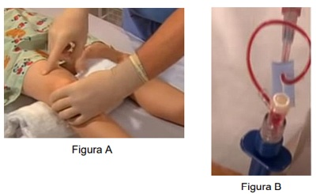
A O local é apropriado, mas houve acidente de punção e a agulha deve ser retirada.
B O local é inapropriado, deve-se optar pela espinha ilíaca anterossuperior.
C O acesso obtido é apropriado para cristaloides, mas não para hemocomponentes.
D O local é apropriado e o acesso intraósseo parece bem locado.
Questão 50 · Tratamento · 4000165594Lactente, sexo masculino, 1 ano e 6 meses de idade, portador de Hemo lia A com atividade inferior a 1%, em reposição regular de fator VIII, apresentou queda da cama há cerca de 1 hora, sem perda de consciência, evoluindo com 3 episódios vômitos após a queda. Na admissão no serviço de emergência estava em bom estado geral, alerta e orientado, mas pouco colaborativo ao exame clínico, o que, segundo os pais, já é habitual em consultas pediátricas. Ao exame clínico, notado apenas hematoma de cerca de 2 cm em região occipital, sem outras alterações. Qual das alternativas abaixo contém as medidas iniciais, na sequência cronológica em que elas devem ser realizadas?
A Sedação e tomografia de crânio; administração de fator VIII (correção 100%) se sangramento intracraniano.
B Observação hospitalar por 6 horas; sedação e tomografia de crânio se surgirem alterações neurológicas.
C Administração de fator VIII (correção 100%); sedação e tomografia de crânio.
D Alta hospitalar com manutenção da reposição regular de fator VIII, porém em dose dobrada.
Questão 51 · Sigilo prof issional em crianças e adolescentes Parecer CFM n 25 de 2013 · Sigilo prof issional · 4000165593Adolescente, sexo feminino, 13 anos de idade, está internada há 6 meses para tratamento de um câncer. Ao longo dessa internação, a adolescente e seus pais iniciaram uma página na internet sobre a doença e, em pouco tempo, a família já tinha milhões de seguidores, incluindo membros da equipe médica do hospital. A adolescente era muito ativa nas redes sociais e todos os dias postava detalhes da sua rotina no hospital. A resposta ao tratamento não foi boa e o caso clínico considerado sem proposta terapêutica curativa. Imediatamente, a família foi buscar informações na internet e descobriu a possibilidade de uma nova droga, de alto custo, recém publicada para este tipo de câncer. Essa droga, no entanto, não foi descrita como e caz para o subtipo específico do câncer desta paciente, mas a família se recusa a aceitar os argumentos médicos e imediatamente iniciou uma campanha na internet para pressionar o hospital a adquirir a medicação. Diante do con ito estabelecido e considerando o código de ética médica, qual deve ser a postura da instituição?
A A instituição não pode divulgar dados específicos da paciente sem autorização, ainda que a mesma já os tenha tornado públicos, independente do objetivo desta divulgação.
B Com a justificativa de prover um bem coletivo maior e evitando a desinformação, a instituição está autorizada nesse cenário a prover publicamente detalhes do caso, pois este já é público.
C A luz do código de ética médica, não há uma definição clara quanto a obrigação da instituição em manter a privacidade sobre as informações médicas de um caso que já está público.
D A instituição pode incentivar os membros da equipe presentes nas redes sociais da paciente, que assim desejarem, a utilizar as mesmas como canal de esclarecimento à população.
Questão 52 · Invaginação intestinal · Pediatria · Intussuscepção ou Invaginação Intestinal · 4000165592Lactente, sexo feminino, 2 meses e 15 dias de idade, é trazida ao serviço de emergência devido a quadro de irritabilidade, vômitos e ausência de evacuação há um dia. Trata-se de criança nascida de termo, sem intercorrências perinatais, em aleitamento materno complementado com fórmula láctea de partida desde a alta da maternidade. Apresenta vacinação em dia de acordo com o calendário nacional. Ao exame clínico, está em regular estado geral, descorada 1+/4+, e apresenta episódios de choro inconsolável. Após exame de toque retal, a paciente eliminou evacuação conforme a imagem a seguir: Qual das opções abaixo confirmará a principal hipótese diagnóstica?
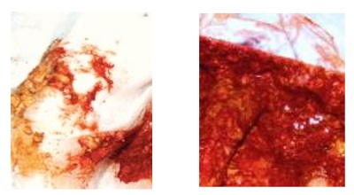
A Teste de exclusão de proteína de leite de vaca.
B Realização de ultrassonografia de abdome.
C Coleta de coprocultura e pesquisa de toxina de
D Realização de radiografia de abdome em posição ortostática e decúbito dorsal.
Questão 53 · Icterícia neonatal · Pediatria · 4000165591Recém-nascido, sexo masculino, 5 dias de vida, está em retorno ambulatorial breve para reavaliação de icterícia. Trata-se de criança nascida de termo (39 semanas), parto vaginal, Apgar 9/9, peso de nascimento de 3.250 g, bolsa rota uma hora antes do parto. Pré-natal sem anormalidades. A tipagem sanguínea do recém-nascido e de sua mãe foram O positivo, e o teste de Coombs direto foi negativo. Evoluiu sem intercorrências na maternidade e recebeu alta hospitalar com 48 horas de vida e em aleitamento materno exclusivo. No momento, está em aleitamento materno exclusivo, pesando 2.850 g, ictérico zona III de Kramer, sendo o restante do exame clínico normal. Colhido o exame de bilirrubina indireta que foi de 11 mg/dL. A conduta recomendada neste caso é:
A Indicar internação hospitalar para fototerapia e coleta de hemograma, reticulócitos e G6PD.
B Solicitar ultrassonografia de abdome superior e programar biópsia hepática.
C Orientar aleitamento materno mais frequente e reavaliação em 48 a 72 horas.
D Substituir aleitamento materno por fórmula parcialmente hidrolisada e reavaliação em 5 dias.
Questão 54 · Glomerulonef rite pósestreptocócica · Pediatria · 4000165590Pré-escolar, sexo masculino, 4 anos de idade, há 4 semanas começou a apresentar pequenas lesões de pele em face, que posteriormente progrediram para outras regiões do corpo. Mãe notou que a criança respira com di culdade e está com o rosto inchado há dois dias. Trazido hoje ao Pronto-Socorro, pois está mais sonolento e sem diurese há 24 horas. Na triagem, apresenta os seguintes dados vitais: FC: 65 bpm, FR: 45 irpm e PA: 140/90 mmHg, Sat O₂: 94% em ar ambiente. Encaminhado à sala de emergência, onde se notou edema de face e ausculta pulmonar com estertores crepitantes em ambas as bases, sem outras alterações significativas. Seguem abaixo as imagens das lesões de pele do paciente e do ritmo cardíaco identificado. Qual das alternativas abaixo apresenta as medidas necessárias para estabilização inicial do paciente?
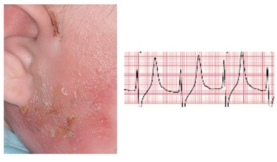
A Oxacilina, clindamicina e soro fisiológico 20 mL/kg.
B Ceftriaxona, bicarbonato de sódio e soro fisiológico 20 mL/kg.
C Ventilação com pressão positiva, seguida de compressões torácicas e atropina.
D Gluconato de cálcio, diurético de alça e restrição hídrica.
Questão 55 · DNPM Desenvolvimento NeuroPsicoMotor · Pediatria · 4000165589Durante a consulta de um bebê de 2 meses de idade, nota-se que a mãe, ao trocar a fralda do bebê, fala com ele num linguajar infantilizado (“manhês”). Como esta atitude é considerada?
A Desnecessária, pois nesta idade não é possível reconhecer a fala.
B Adequada, por denotar um bom vínculo entre a mãe e a criança.
C Prejudicial, porque é um estímulo para o desenvolvimento inadequado da fala.
D Inadequada, porque a linguagem expressiva se manifesta próximo aos 12 meses.
Questão 56 · Mastoidite · 4000165588Pré-escolar, sexo masculino, 2 anos e 9 meses de idade, sem comorbidades prévias, está com tosse e coriza há 7 dias. Há 5 dias iniciou com febre de até 38,8ºC e otalgia à esquerda. Procurou um serviço médico há dois dias, sendo feito diagnóstico de otite média aguda à esquerda, com orientação de uso de azitromicina por 5 dias. Está no segundo dia de tratamento, mantendo febre. Ao exame clínico, destacam-se as imagens abaixo. Qual é a conduta indicada?
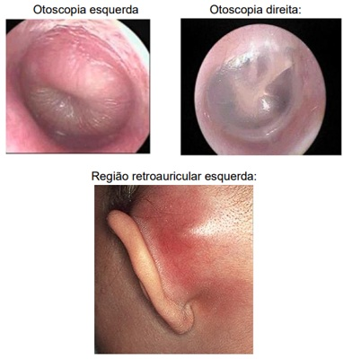
A Iniciar tratamento com ceftriaxona e clindamicina endovenosas e solicitar tomografia de mastoide e crânio.
B Manter tratamento atual e considerar escalonar antibiótico se febre persistir além de 72 horas.
C Trocar antibioticoterapia para amoxicilina com clavulanato oral e reavaliar em 48 a 72 horas.
D Iniciar oxacilina endovenosa e realizar a drenagem percutânea da região retroauricular esquerda.
Questão 57 · Programa Nacional de Imunizações · Pediatria · 4000165587Lactente, sexo masculino, 2 meses de idade, nasceu com atresia duodenal, está internada desde o nascimento. Neste período de 2 meses, foi submetido a abordagem cirúrgica, recebeu nutrição parenteral e desenvolveu infecção de cateter central tratada com sucesso. Encontra-se agora em condições clínicas de transição para dieta oral. Como ainda não tem previsão de alta hospitalar, a equipe deseja manter a vacinação atualizada durante a internação. A criança já recebeu as vacinas de BCG e hepatite B ao nascimento. Quais são as vacinas indicadas neste momento considerando o Programa Nacional de Imunizações (PNI) e os dados clínicos fornecidos?
A Pneumocócica 10 valente, tetravalente (DPT e hemófilos B), inativada de poliomielite (VIP) e rotavírus.
B Pneumocócica 10 valente, pentavalente (DPT, hepatite B e hemófilos B) e inativada de poliomielite (VIP).
C Pneumocócica 10 valente, meningocócica C, rotavírus e palivizumabe.
D Pneumocócica 10 valente, pentavalente (DPT, hepatite B e hemófilos B).
Questão 58 · Pioartrite · 4000165586Escolar, sexo masculino, 5 anos de idade, sem comorbidades prévias, é levado ao Pronto-Socorro por febre de até 39,5ºC e claudicação dolorosa à esquerda há 2 dias. Nega trauma local. Mãe refere também que a criança apresentou quadro de tosse, coriza e odinofagia há 14 dias, já resolvido. Ao exame clínico, criança em regular estado geral, membro inferior esquerdo em exão, abdução e rotação externa da articulação coxo-femoral (conforme imagem abaixo) com dor intensa à manipulação, membro inferior direito sem limitação funcional e sem dor à manipulação, ausência de outras alterações significativas ao exame clínico. Qual é a conduta indicada com base na hipótese diagnóstica mais provável?
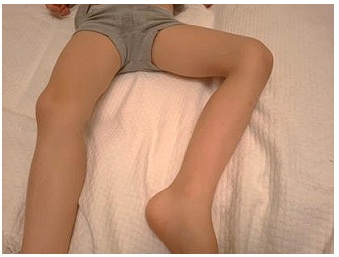
A Alta hospitalar com anti-inflamatório, orientação de sinais de alarme e reavaliação em 48 a 72 horas.
B Coleta de FAN, fator reumatoide, anti-DNA, anti-RO, anti-LA, VHS e início de corticoterapia.
C Realização de eletrocardiograma, ecocardiograma, anti-estreptolisina-O e prescrição de penicilina benzatina.
D Internação hospitalar, coleta de triagem infecciosa e introdução de ceftriaxona e oxacilina endovenosas.
Questão 59 · DNPM Desenvolvimento NeuroPsicoMotor · Pediatria · Marcos Importantes · 4000165585Lactente, sexo feminino, 11 meses de vida, está em consulta ambulatorial de rotina. Trata-se de criança prematura, nascida de 35 semanas, com peso de nascimento de 2110 g, sem intercorrências durante o seguimento. Na consulta de hoje, a maior preocupação da mãe é que a criança não engatinha. Na avaliação realizada na consulta, notado que a criança imita a mãe ao bater palmas, faz movimentos de pinça para pegar objetos, reage a uma conversa como se estivesse respondendo, mas com sons incompreensíveis, sem falar nenhuma palavra. Ela ca em pé com apoio, mas realmente não engatinha quando colocada de bruços. Qual das alternativas contempla, respectivamente, a avaliação do desenvolvimento e a conduta indicada?
A O atraso do desenvolvimento é justificado pela prematuridade, orientar estimulação motora e retorno precoce.
B O desenvolvimento motor está atrasado mesmo se considerada a prematuridade, encaminhar para seguimento com fisioterapia.
C O desenvolvimento está compatível com o esperado para a idade, sem necessidade de nenhuma intervenção específica.
D O desenvolvimento motor e de linguagem estão atrasados para a idade, iniciar investigação com eletroencefalograma.
Revisar: possível letra faltando em enunciado
Questão 60 · Febre sem sinais localizatórios FSSL · Inf ecção do Trato Urinário · Pediatria · 4000165584Lactente, sexo feminino, 8 meses de idade, sem comorbidades prévias, foi atendida em Pronto-Socorro Infantil há 3 dias, com quadro de febre de até 39,5oC por 2 dias, associado a baixa aceitação alimentar. A mãe não notou nenhum outro sintoma associado. Ao exame clínico estava em bom estado geral e sem nenhuma alteração significativa. Considerado quadro de febre sem sinais localizatórios, colhida uroanálise e urocultura por sondagem vesical de alívio. Resultado da uroanálise: pH 5,5, densidade 1020, leucócitos 85.000/mm3 , hemácias 15.000/mm³, nitrito negativo. Introduzido amoxicilina com clavulanato e solicitado retorno em 72 horas para reavaliação e checagem de urocultura. Hoje, na reavaliação, mãe refere que a paciente está tomando a medicação adequadamente, evoluindo afebril há 24 horas e sem novas queixas, exceto pelo surgimento de lesões maculopapulares eritematosas, em tronco, notadas há 12 horas. Urocultura com resultado final negativo. Qual é a conduta adequada?
A Manter antibiótico atual e associar anti-histamínico oral de segunda geração.
B Trocar tratamento atual para uma opção de antibiótico não beta-lactâmico.
C Suspender antibioticoterapia e liberar sem nenhum tratamento específico.
D Colher nova uroanálise para definir a necessidade de manter tratamento.
Questão 61 · COVID 19 · Índice de Vulnerabilidade Social IVS · 4000165583O município de São Paulo tem 12,4 milhões de pessoas e a seguinte distribuição de renda e raça entre seus vários distritos administrativos: No mês de maio de 2021, durante a pandemia da COVID-19 foram construídos os seguintes mapas de mortalidade por COVID-19 e da cobertura vacinal para SARS-Cov2 na cidade. Qual a afirmação possível com relação às estratégias de prevenção da COVID-19 no município de São Paulo?

A A definição de critérios de prioridade para a vacinação baseada em idade e comorbidade contribuiu para o aumento da vulnerabilidade na dimensão programática.
B A dimensão individual da vulnerabilidade não foi considerada nas estratégias de prevenção, uma vez que as estratégias de prevenção foram vacinas, uso de máscaras e controle de contactantes.
C A dimensão programática da vulnerabilidade está voltada para ações de saúde que visam o seguimento das populações, como pessoas com doenças crônicas e crianças, não se aplicando a contextos de pandemia.
D A dimensão social da vulnerabilidade relacionada à raça, renda e acesso aos serviços de saúde não foi considerada nas estratégias de vacinação da pandemia.
Questão 62 · COVID 19 · 4000165582Médico atende na Unidade Básica de Saúde (UBS) um adolescente de 17 anos de idade com história de 4 dias de febre, cefaleia e mialgia, sem comorbidades. Ao exame físico: Bom estado geral, febril (temperatura de 38,5ºC), desidratado, eupneico. Pressão arterial de 118 x 78 mmHg (em pé e deitado), frequência cardíaca de 90 bpm. Saturação de oxigênio 96%. Ausculta cardíaca e pulmonar sem alterações. Abdome flácido, sem visceromegalias. Ausência de edema. Prova do laço negativa. O teste rápido NS1 para dengue está negativo. Além de prescrever antitérmicos e afastá-lo das atividades laborais, deve-se:
A Solicitar RT-PCR para SARS-CoV2, hidratação via oral, encaminhar para realização de hemograma no pronto- atendimento e notificar suspeita de COVID-19.
B Solicitar teste rápido de antígeno SARS -CoV2, encaminhar para pronto-atendimento para realização de hemograma e hidratação endovenosa, notificar suspeita de dengue e COVID-19.
C Solicitar teste rápido de antígeno para SARS -CoV2, realizar hidratação endovenosa na própria UBS e aguardar para notificar a suspeita COVID-19.
D Solicitar RT-PCR para SARS -CoV2, hidratação via oral e notificar suspeita de dengue e COVID-19.
Questão 63 · Medicina Preventiva · Odds Ratio ou Razão de Chances · 4000165581A vacinação anual contra in uenza é indicada para idosos acima de 65 anos. Para analisar a possível associação entre a vacinação contra in uenza e o risco de demência, foi realizado um estudo de coorte com 123.747 participantes. Com base nos resultados apresentados, assinale a alternativa correta.Tabela – Resultados (risco relativo e seu intervalo de 95% de confiança) das estimativas de associação entre vacinação contra influenza versus não vacinação e incidência de demência.
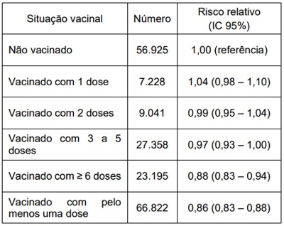
A Não se observou associação entre vacinação contra influenza e o risco de demência.
B A vacinação contra influenza aumentou o risco de demência.
C A redução do risco de demência após a vacinação não é significativa.
D A vacinação repetida contra influenza reduziu o risco de demência.
Questão 64 · Principais marcos legais do SUS · Lei n 81421990 · Constituição Federal CF1988 · 4000165580O controle social no Sistema Único de Saúde é exercido por meio de conferências e conselhos de saúde. Qual é a alternativa correta?
A Sindicatos, conselhos profissionais e associações de pacientes não podem compor os conselhos de saúde municipais.
B Prestadores de serviços privados conveniados ao SUS podem fazer parte dos conselhos e conferências de saúde.
C As conferências de saúde surgiram com a Constituição de 1988 e ocorrem a cada 4 anos.
D A composição do conselho de saúde é de um terço para cada categoria, com partes iguais entre usuários, gestores e trabalhadores da saúde.
Questão 65 · Financiamento em Saúde · Outras normativas do SUS e da Saúde em geral · 4000165579O Sistema Único de Saúde (SUS) é marcado por relações entre o público e o privado tanto no nanciamento das atividades e ações de saúde quanto na prestação, acesso e uso de serviços. Qual é a alternativa correta sobre a relação público- privada na saúde no Brasil?
A As despesas médicas ou de hospitalização dedutíveis de Imposto de Renda de Pessoas Físicas restringem-se aos pagamentos efetuados pelo contribuinte a médicos, dentistas e outros profissionais da saúde, mas não incluem pagamentos de mensalidades de planos e seguros de saúde.
B Os hospitais filantrópicos, para que tenham direito ao título de filantropia e gozem de isenções de contribuições sociais, fiscais e tributárias, precisam atender exclusivamente (80% dos leitos) pacientes do SUS.
C Pacientes usuários de planos de saúde, desde que tenham cobertura de assistência farmacêutica assegurada pelo plano, também têm direito a acessar e retirar medicamentos em unidades ou farmácias públicas do SUS se a prescrição for ratificada por um serviço do sistema público.
D O ressarcimento ao SUS ocorre quando os atendimentos prestados aos beneficiários de planos de saúde forem realizados em estabelecimento do SUS e instituições conveniadas ou contratadas pelo SUS. São ressarcidos apenas procedimentos cobertos nos contratos dos planos de saúde com usuários.
Questão 66 · Método Clínico Centrado na Pessoa · 4000165578Qual é a alternativa correta quanto ao Método Clínico Centrado na Pessoa (MCCP)?
A É uma forma de organizar as consultas, que considera a expectativa dos médicos e das pessoas. É uma consulta que pode ser realizada em condições crônicas ou agudas.
B Refere-se à atitude ética do profissional na consulta, que coloca as vontades da pessoa atendida como prioridade. É uma consulta mais longa do que a centrada no diagnóstico.
C A primeira etapa do MCCP é compreender a pessoa como um todo, seu contexto próximo e distante. É bastante apropriada para consultas em saúde mental, sejam em consultas agendadas ou não.
D É uma abordagem de consulta que visa descobrir a demanda oculta da pessoa. É uma consulta realizada principalmente em consultas agendadas de acompanhamento.
Questão 67 · Incidência e Prevalência · Medicina Preventiva · 4000165577O médico responsável pela Vigilância Epidemiológica de um município foi chamado para estabelecer se está ocorrendo uma epidemia, uma vez que vem ocorrendo um grande aumento na procura aos serviços de saúde devido à ocorrência de casos de uma doença respiratória não bem definida. Após investigações iniciais, foi estabelecida a definição de caso e critérios para o diagnóstico de forma a orientar a investigação. Uma vez que esses requisitos foram atendidos, qual instrumento metodológico é utilizado em vigilância epidemiológica para estabelecer a existência ou não da epidemia?
A Comparação da prevalência nesse município com a de anos anteriores.
B Comparação da incidência observada nesse município com municípios vizinhos.
C Comparação da incidência atual nesse município com a de anos anteriores.
D Comparação da prevalência observada nesse município com municípios vizinhos.
Questão 68 · NNT · 4000165576O uso regular de protetor solar evita o carcinoma espinocelular cutâneo no longo prazo, mas o efeito sobre o melanoma é controverso. A aplicação no longo prazo de protetor solar e o risco de melanoma cutâneo foi avaliada num ensaio prospectivo, randomizado e controlado. Na Austrália, 1600 residentes foram aleatoriamente distribuídos em um grupo de aplicação diária ou um grupo de aplicação à vontade de protetor solar na cabeça e nos braços durante 4 anos. Os participantes foram acompanhados durante 14 anos para verificar a ocorrência de melanoma primário. Nesse tempo, 8 novos casos de melanoma primário foram identi cados no grupo de proteção solar diária (n=800) e 16 foram identi cados no grupo de proteção solar a vontade (controle) (n=800). Quantos indivíduos precisariam utilizar o protetor solar diariamente para evitar um caso adicional de melanoma primário nessa comunidade?
A 10.
B 32.
C 64.
D 100.
Questão 69 · Medicina Preventiva · Tipos de Estudos Epidemiológicos · Odds Ratio ou Razão de Chances · 4000165575A CORONAVAC é uma vacina inativada e adjuvantada contra o SARS-CoV-2, desenvolvida pela farmacêutica SINOVAC. Em estudo realizado em 16 centros de pesquisa clínica no Brasil, Palácios et al demonstraram uma prevenção de infecção sintomática confirmada por RT-PCR pelo SARS-CoV-2 de 50,7% (IC95%: 36,0% - 62,0%). Em estudo clínico realizado em 24 centros na Turquia a e cácia da CORONAVAC para o mesmo desfecho foi de 83,5% (IC95%: 65,4% - 92,1%). Já no Chile, a efetividade da CORONAVAC em mais de cinco milhões de vacinados foi de 65,9% (IC95%: 65,2% - 66,6%) na prevenção de infecção sintomática laboratorialmente confirmada pelo SARS-CoV-2 (98,1% dos casos confirmados por RT- PCR e 1,9% por teste de antígeno). Quais são as razões que poderiam explicar a diferença observada nos três estudos?
A O delineamento e os objetivos dos três estudos são diferentes.
B Os três ensaios clínicos não são comparáveis entre si.
C A diferença entre os resultados não é significativa.
D Vacinas de vírus atenuados apresentam baixo desempenho.
Questão 70 · Medicina Preventiva · Atenção Primária à Saúde APS no Brasil · Abstinência de Álcool · 4000165574Médico está realizando seu primeiro plantão numa Unidade de Pronto-Atendimento (UPA) 24h numa cidade com 200 mil habitantes. Essa cidade tem a seguinte rede de saúde: Após atender um paciente na UPA, o médico fez uma carta de contrarreferência. Qual a alternativa correta, considerando os princípios de organização das redes de saúde?
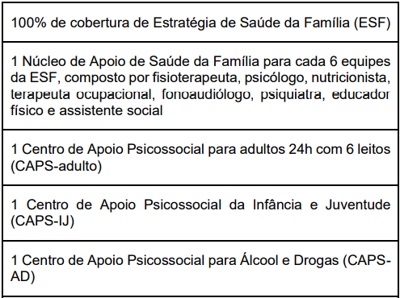

A Idoso com dor lombar crônica há 7 anos. Tomografia com osteófitos em coluna lombar. Realizada analgesia. Encaminhado à ortopedia e fisioterapia.
B Adulto em observação por abstinência alcoólica com melhora dos sintomas. Exames normais. Prescrito benzodiazepínicos. Encaminhado à Estratégia de Saúde da Família.
C Criança com atraso escolar e suspeita de autismo encaminhada ao CAPS-IJ. Orientação aos pais que não há urgência.
D Gestante primigesta, realizou diagnóstico de sífilis secundária no Pronto-Socorro. Realizada primeira dose de penicilina. Encaminhada ao pré-natal de alto risco.
Questão 71 · Estudos Ecológicos · 4000165573Entre 2013 e 2018 o Ministério da Saúde implantou o Programa Mais Médicos (PMM), para aumentar a oferta de médicos da atenção básica, em áreas carentes do país. Foi realizado um estudo para investigar a associação entre o PMM e resultados de saúde infantil. Foram analisados os dados dos 5.565 municípios brasileiros ao longo de 12 anos (2007 a 2018), comparando resultados de saúde infantil (taxa de mortalidade infantil e taxa de mortalidade neonatal) entre municípios que receberam médicos do PMM e aqueles que não os receberam. Qual é o tipo de estudo que foi realizado?
A Coorte prospectiva.
B Ecológico.
C Coorte retrospectiva.
D Transversal.
Questão 72 · Quimioprof ilaxia · 4000165572Homem com doença meningocócica mora com três pessoas (esposa de 34 anos, um lho de 14 anos e uma lha de 4 anos) e trabalha num escritório, 6h por dia, no mesmo ambiente, com 5 adultos. Segundo o Guia de Vigilância em Saúde do Ministério da Saúde, como deve ser realizada a quimioprofilaxia para prevenção de casos secundários da doença?
A Todos os adultos e crianças, incluindo pessoas do trabalho e domicílio, com rifampicina.
B Todas as pessoas do domicílio, com rifampicina, e bloqueio vacinal para as pessoas do trabalho.
C Todas as pessoas do domicílio e profissionais de saúde que tiveram qualquer contato com paciente, com rifampicina.
D Todas as crianças e adultos que moram com o paciente, com rifampicina.
Questão 73 · Tratamento · 4000165571Homem, 32 anos, trabalhador do sexo, procura atendimento com queixa de lesão discretamente dolorosa na região do pênis há 2 dias. Última relação sexual há 5 dias. Nega infecções sexualmente transmissíveis prévias. Sempre usa preservativo com clientes, mas não com sua esposa. Tem relação apenas com mulheres, com penetração insertiva (anal e vaginal) e sexo oral (faz e recebe). A lesão é apresentada. O teste rápido para HIV foi não reagente. Além das sorologias para infecções sexualmente transmissíveis, qual é o tratamento e a estratégia preventiva nesse momento?
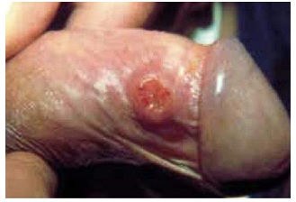
A Ceftriaxona e azitromicina; oferecer profilaxia pré-exposição para o HIV; checar vacinas para hepatite B.
B Ceftriaxona e azitromicina; oferecer profilaxia pós-exposição para o HIV, checar vacinas para hepatite A e B
C Azitromicina e penicilina benzatina; oferecer profilaxia pós-exposição para o HIV; checar vacinas para hepatite B.
D Azitromicina e penicilina benzatina; oferecer profilaxia préexposição para o HIV; checar vacinas para hepatite A e B.
Questão 74 · Responsabilidade prof issional · Sigilo prof issional · Ética Médica · 4000165570Jéssica é uma paciente que mora em uma região de baixa renda. Ela é acompanhada desde a infância na Estratégia de Saúde da Família. Hoje ela tem 23 anos e procura o médico chorosa, pois há alguns dias realizou o teste de gravidez que veio positivo. Refere atraso menstrual de 10 semanas e pretende interromper a gestação. Já entrou na internet e veri cou onde conseguir as medicações. Tem apoio de uma amiga muito próxima com quem tem conversado bastante há vários dias. Está muito preocupada com medo de que sua família e seu ex-namorado, com quem já terminou o relacionamento, descubram a gravidez. Considerando as Diretrizes do Ministério da Saúde e o Código de Ética Médica, deve-se acolher Jéssica em:
A Sua decisão e orientar sobre os riscos dos métodos, caso decida interromper a gestação.
B Seu sofrimento e sugerir que converse com seu ex-namorado, pois é direito dele saber sobre a gravidez para tomarem uma decisão juntos.
C Seu sofrimento, mas afirmar que pela interrupção da gestação ser um procedimento proibido pela lei, você precisa notificar a justiça.
D Sua decisão, mas afirmar que o Código de Ética lhe impede de outras ações além disso.
Questão 75 · Terminologia · 4000165569Existem alguns conceitos que permitem compreender a diversidade sexual e quali car o cuidado de pessoas LGBTQIA+ (lésbicas, gays, bissexuais, transexuais e travestis, definição e exemplos corretos sobre um desses conceitos:
A A orientação sexual se refere a com quem a pessoa tem relações sexuais. Exemplo: heterossexual, bissexual ou homossexual.
B A identidade de gênero é autodeclarada e se refere à compreensão que a pessoa tem do seu gênero. Exemplo: homem cis, mulher trans e travesti.
C A identidade de gênero é definida socialmente a partir de como a pessoa expressa seu gênero. Exemplo: gay, lésbica e travesti.
D A orientação sexual é autodeclarada e se refere a como a pessoa expressa sua sexualidade. Exemplo: assexual, pansexual e intersexo.
Questão 76 · Hipertensão Arterial Sistêmica HAS · 4000165568Paulo é um paciente de 48 anos e está em uso de captopril 25 mg a cada 12h há 6 anos e vem à sua primeira consulta ambulatorial. Refere que recebeu o diagnóstico de hipertensão arterial sistêmica (HAS) no Pronto-Socorro após uma forte cefaleia e pressão arterial de 180 x 100 mmHg, quando introduziram essa medicação. Desde então sua pressão está controlada ao redor de 130 x 80 mmHg. Realizou exames há 10 meses solicitados por outro pro ssional, todos normais. Ele tem muito medo de um “derrame”, pois seu pai morreu de um acidente vascular cerebral aos 72 anos e seu avô aos 78 anos. Nega tabagismo, etilismo, outras doenças ou sintomas. Qual deve ser a conduta a ser proposta para Paulo nessa consulta?
A Manter a dose da medicação; solicitar exames de controle para HAS.
B Suspender a medicação; fazer controle da pressão arterial.
C Checar a adesão à medicação; solicitar exames de controle para HAS.
D Reduzir a dose da medicação; solicitar eletrocardiograma.
Questão 77 · Epidemiologia · 4000165567Qual é a alternativa correta em relação à estrutura epidemiológica da esquistossomose?
A O ser humano infectado elimina ovos viáveis nas fezes por toda a vida.
B As cinco espécies de
C Envolve três espécies: o helminto, o ser humano e um vetor.
D A infecção humana ocorre pela penetração ativa do agente através da pele íntegra.
Questão 78 · Sigilo prof issional · Ética Médica · Relação com pacientes e f amiliares · 4000165566Médico que trabalha numa equipe de Estratégia de Saúde da Família e atende todos os membros de família: Jorge (pai), Tereza (esposa), Jéssica ( lha, com 4 anos) e Enzo ( lho, 6 anos). Tereza tem diagnóstico de transtorno depressivo maior e está disputando a guarda dos seus lhos com Jorge, de quem está em processo de divórcio. Ela solicita cópia do seu próprio prontuário e dos lhos para anexar ao processo judicial e comprovar o transtorno depressivo, os relatos de maus tratos do marido e dificuldades com a educação das crianças que ela informou em consultas anteriores. Baseado no Código de Ética Médica, qual deve ser a conduta?
A Fornecer a cópia do prontuário de Tereza, mas a do prontuário dos filhos somente após a autorização por escrito também de Jorge.
B Fornecer a cópia do prontuário de Tereza, mas a dos filhos apenas após a autorização judicial, por se tratar de um processo legal.
C Fornecer a cópia do prontuário de Tereza e dos filhos, mas apenas após a autorização por escrito de Tereza.
D Fornecer a cópia do prontuário de Tereza e dos filhos, mas apenas após consultar Jorge, por se tratar de um processo legal.
Questão 79 · Medicina Preventiva · Vigilância Epidemiológica · 4000165565Com o aumento das coberturas vacinais no Brasil, a partir do nal da década de 1990, observou-se uma marcante redução na incidência das doenças preveníveis por vacinação. Isso não se veri cou em relação à coqueluche. Na década passada (2011 – 2020) o número médio anual de casos confirmados no país foi acima de 3.000. Qual é uma das razões para este comportamento?
A A imunogenicidade das vacinas para infecções bacterianas é baixa.
B O predomínio de linhagens da
C A concentração de casos em menores de um ano antes do reforço vacinal.
D A incorporação da biologia molecular ao arsenal diagnóstico.
Questão 80 · Tabaco · 4000165564A primeira consulta de gestante de 23 anos, em situação de rua, foi realizada com 14 semanas. Nessa consulta verifica-se que ela fuma 4 cigarros por dia, o primeiro no período da tarde. A paciente a rma que até gostaria de parar de fumar, mas que não consegue, pois já tentou outras vezes e não conseguiu. Qual é a primeira abordagem recomendada pelo Ministério da Saúde para esse tipo de situação?
A Verificar como foram as tentativas anteriores e orientar estratégias de tratamento durante a gestação.
B Orientar sobre os riscos e encaminhar para grupo de apoio da unidade básica de saúde.
C Registrar a dificuldade da cessação do tabagismo e encaminhá-la para o pré-natal de alto risco.
D Avaliar o nível de dependência pelo escore de Fagerström e notificar a assistência social.
Questão 81 · Asma ocupacional x asma relacionada ao trabalho · Asma relacionada ao trabalho · Asma · 4000165563Mulher de 22 anos de idade trabalha como auxiliar de limpeza em um grande hospital há 2 anos. Hoje procura ambulatório de clínica médica pois há 6 meses apresenta episódios de tosse e, às vezes, falta de ar durante o dia, que costumam melhorar à noite. Estes episódios estão se tornando mais frequentes. Não costuma apresentar tais sintomas aos nais de semana. Não sabe referir se teve febre. Nega antecedentes mórbidos relevantes e nunca fumou. Ao exame clínico presença de discretos sibilos expiratórios à ausculta pulmonar, sem outras alterações relevantes. A radiografia de tórax realizada há 15 dias é apresentada. Qual é a conduta, considerando a principal hipótese diagnóstica?

A Solicitar que faça a medida de Pico de Fluxo no trabalho e em casa.
B Afastamento das atividades laborais por 1 semana e prednisona oral por 5 dias.
C Solicitar tomografia de tórax e iniciar broncodilatador de longa duração.
D Prescrever salbutamol para sintomas e orientar para mudança da área de atuação.
Questão 82 · Distúrbios eletrolíticos · 4000165562Mulher de 66 anos de idade, diabética e hipertensa, em uso de enalapril e metformina, comparece a consulta ambulatorial com queixa de astenia e turvação visual há 2 dias. É encaminhada ao Departamento de Emergência após realizar o seguinte eletrocardiograma. Qual deve ser a conduta imediata?
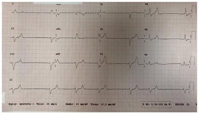
A Atropina.
B Marcapasso transcutâneo.
C Gluconato de cálcio.
D Trombólise.
Questão 83 · Eletrocardiograma · 4000165561Mulher de 55 anos de idade, procura o Pronto-Socorro com queixa de dor torácica precordial de moderada intensidade, contínua, há 1 dia. A dor iniciou durante atividade física. Não notou irradiação, fatores de melhora ou de piora. Ao exame clínico apresenta frequência cardíaca de 115 bpm, pressão arterial 130/80 mmHg em todos os membros, com pulsos simétricos. Frequência respiratória 18 irpm. Não há alterações na semiologia cardíaca ou pulmonar. O restante do exame clínico é normal. Solicitado o eletrocardiograma a seguir. Qual é a hipótese diagnóstica?
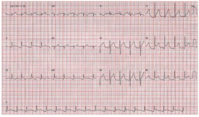
A Infarto agudo do miocárdio.
B Hipercalemia.
C Tromboembolismo Pulmonar.
D Pericardite.
Questão 84 · Anatomia Embriologia e Radiologia dos Seios Panarasais · 4000165560Mulher de 35 anos de idade deu entrada no Pronto-Socorro com cefaleia e febre não medida há 5 dias. Tentou utilizar vários analgésicos sem melhora. No exame clínico apresenta T 38ºC, FC 100 bpm, sem outras alterações. Foi realizada a tomografia computadorizada mostrada a seguir. Qual é o diagnóstico?
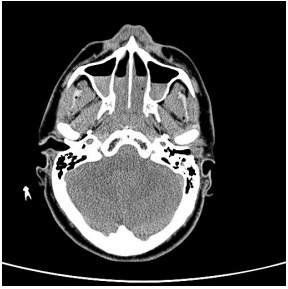
A Meningoencefalite.
B Sinusite.
C Normal para a idade.
D Osteomielite.
Questão 85 · Ortopedia · Avaliação dos Exames de Imagem · 4000165559Homem de 65 anos de idade, pedreiro aposentado, vem para consulta com clínico geral referindo quadro de dor lombar há aproximadamente 2 semanas. Refere que o quadro é caracterizado por dor de forte intensidade, com irradiação para ambos os membros inferiores abaixo dos joelhos, associada a parestesias. Relata ainda di culdade de ereção e redução da sensibilidade em região perianal. Nega alteração da intensidade da dor ao longo do dia. Ao exame clínico: Dé cit motor assimétrico distal nas pernas e pés, com redução de força à dorsi exão e exão plantar dos pés e dos artelhos. Re exos aquileus e patelares abolidos. Hipoestesia “em sela” na região perineal. Desencadeamento de dor irradiada à exão de quadril a 45º com joelhos estendidos. Apresenta incapacidade de permanecer na ponta dos pés. O exame físico mostra massa em hipogástrio. Nega febre, perda ponderal, antecedente pessoal ou familiar de neoplasia maligna.
A O quadro sugere lesão de cauda equina, devendo ser solicitada ressonância magnética de coluna lombossacra.
B O quadro sugere lesão compressiva de medula torácica, devendo ser investigada a etiologia inflamatória ou infecciosa.
C O quadro é característico da síndrome de Guillain-Barré (polirradiculoneurite aguda), devendo ser solicitada eletroneuromiografia e iniciada gamaglobulina endovenosa.
D O quadro é sugestivo de neoplasia metastática intramedular em topografia de medula cervical, relacionado a possível neoplasia prostática.
Questão 86 · Transtorno do Humor Bipolar THB · Diagnóstico do Transtorno do Humor Bipolar THB · 4000165558Transtornos do Humor Mulher de 20 anos de idade chega ao serviço de emergência informando ter sido agredida por pessoa no ônibus. O contato inicial é difícil, pois a paciente está agitada, preocupada e falando rapidamente. Ela informa que o agressor a estava perseguindo desde o ponto de embarque. A paciente recebeu notícia sobre uma herança há quatro dias, e desde então não consegue dormir. Há três dias, pediu demissão do emprego de faxineira por achar que sua “patroa estava roubando seu dinheiro para pagar contas da casa”. Nos últimos dois dias, com a expectativa de receber o dinheiro, gastou cerca de 2 mil reais em vários pares de sapatos de 3 lojas diferentes. Qual é a principal hipótese diagnóstica para o caso?
A Transtorno de personalidade borderline.
B Reação aguda ao estresse.
C Síndrome do pânico.
D Mania com sintomas psicóticos.
Questão 87 · Diagnóstico dif erencial das artropatias · 4000165557Mulher de 50 anos de idade, costureira, vem para consulta ambulatorial referindo emagrecimento não intencional e dores em articulações de mãos há aproximadamente 6 meses, contínua, com piora progressiva nas últimas 4 semanas. Relata rigidez matinal de aproximadamente 20 minutos, mas conta que as dores são piores ao nal do dia após realização das suas atividades diárias. Antecedentes: Hipertensão Arterial Sistêmica, em uso de hidroclorotiazida 25mg/dia; consumo de 5 garrafas de cerveja por semana; tabagismo 10 anos-maço. Ao exame clínico: dor à palpação de interfalanges proximais de todos os dedos de ambas as mãos, e de 2ª e 3ª metacarpofalanges bilateralmente, sem edema ou eritema. O restante do exame clínico está normal. Qual é a alternativa correta?
A O diagnóstico inicial não inclui a realização de radiografia de mãos e punhos.
B A investigação inicial inclui a dosagem de TSH.
C O diagnóstico de artrite psoriásica é excluído pela presença de fator reumatoide positivo.
D A presença de rigidez matinal de 20 minutos sugere artropatia inflamatória.
Questão 88 · Capnograf ia · Monitorização durante a PCR · Capnograf ia · 4000165556Homem de 65 anos de idade é admitido por insu ciência respiratória aguda no Pronto-Socorro. Durante o atendimento inicial, evolui com piora do padrão respiratório e da hipoxemia, optando-se por intubação orotraqueal. Nesse momento, a frequência respiratória é de 40 irpm, saturação de oxigênio de 88% com máscara não reinalante a 15L/min, frequência cardíaca de 120bpm e pressão arterial de 60x30 mmHg. Após a intubação orotraqueal, a capnogra a mostra a seguinte curva: Qual é o diagnóstico mais provável?
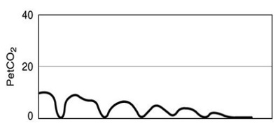
A Intubação esofágica.
B Pneumotórax.
C Intubação seletiva.
D Broncoespasmo.
Questão 89 · Agentes Intravenosos · 4000165555Homem de 65 anos de idade é admitido por insu ciência respiratória aguda no Pronto-Socorro. Durante o atendimento inicial, evolui com piora do padrão respiratório e da hipoxemia, optando-se por intubação orotraqueal. Nesse momento, a frequência respiratória é de 40 irpm, saturação de oxigênio de 88% com máscara não reinalante a 15L/min, frequência cardíaca de 120bpm e pressão arterial de 60x30 mmHg. Considerando a disponibilidade das quatro drogas abaixo, qual é a medicação de escolha para realizar a sedação deste paciente?
A Fentanil.
B Midazolan.
C Propofol.
D Etomidato.
Questão 90 · COVID 19 · Ultrassonograf ia de tórax · 4000165554Homem de 46 anos de idade com obesidade grau 3 é admitido no Departamento de Emergência. Tem febre há 10 dias, associada a dispneia progressiva e tosse nos últimos 3 dias. Ao exame clínico, apresenta-se taquipneico, com saturação de oxigênio de 84% em ar ambiente. Ausculta pulmonar com raros sibilos e estertores em bases, principalmente à direita. O ultrassom pulmonar, protocolo BLUE, demonstra deslizamento pleural e a seguinte imagem nos seis pontos. Qual o diagnóstico mais provável para a insuficiência respiratória deste paciente?

A Pneumonia bacteriana.
B Asma exacerbada.
C Infecção aguda por COVID-19.
D Infarto pulmonar por tromboembolismo pulmonar agudo.
Questão 91 · Síndrome Demencial · Investigação · Neurologia · 4000165553Homem, 80 anos de idade, engenheiro aposentado, procura ambulatório de geriatria por estar cada vez mais esquecido há 2 anos, desde a morte de sua esposa. Apresenta tristeza ocasional quando se lembra da esposa. A lha refere que há 1 ano está morando junto com o paciente pois ele não estava se alimentando bem e estava com di culdade de realizar os afazeres domésticos. Ao exame clínico, apresenta-se repetitivo, com di culdade de terminar frases. Semiologia cardio- pulmonar e abdominal sem alterações. O Miniexame do estado mental é de 24/30 (normal ≥ 28). Assinale a alternativa que relaciona os exames complementares indicados para a investigação deste paciente:
A Dosagem de vitamina D sérica, TSH, T4 livre, sorologia para citomegalovírus e herpes simples e tomografia de crânio.
B Dosagem de vitamina B1 e B6 sérica, glicemia, colesterol total e frações e ressonância de crânio.
C Dosagem de vitamina B12 sérica, TSH, T4 livre, sorologia para sífilis e HIV e tomografia de crânio.
D Dosagem de ferro sérico, hemograma, TSH, coagulograma, ureia, creatinina, sódio, potássio, cálcio e ressonância de crânio.
Questão 92 · Dermatologia · Tinea crural · 4000165552Homem de 28 anos de idade refere há 1 mês lesões pruriginosas nas virilhas. Ao exame clínico observa-se eritema e descamação nas regiões inguinais. O exame micológico direto foi positivo para hifas artrosporadas. Qual é o diagnóstico?

A Tínea negra.
B Tínea crural.
C Candidose.
D Piedra branca.
Questão 93 · Hidrocef alia de Pressão Normal · Exames de Neuroimagem · Quadro Clínico · 4000165551Homem de 72 anos de idade, etilista, veio ao retorno de consulta do ambulatório de geriatria. Tinha queixa de lentidão para andar evoluindo progressivamente ao longo de vários meses com di culdade em coordenar a marcha (inicialmente falta de jeito, às vezes esbarrando nas coisas ou pessoas). Este sintoma piorou gradativamente até não conseguir andar sem um andador ou encostado nas paredes. Começou também a apresentar urgência miccional e, após passar no urologista, não foi detectado nada de anormal em sua próstata ou bexiga. Nessa época sofreu um tombo no banheiro. Foi a partir desse incidente que caram mais evidentes as dificuldades para se lembrar de fatos recentes assim como de encontrar a palavra adequada para se expressar. Trouxe exames laboratoriais normais e a tomografia apresentada. Qual é a hipótese diagnóstica provável?

A Hidrocefalia de pressão normal.
B Pelagra.
C Hematoma subdural crônico.
D Síndrome de Wernicke.
Questão 94 · Transtorno de Pânico · Transtornos Ansiosos · 4000165550Homem de 48 anos de idade, casado, comparece em retorno de consulta ambulatorial com queixa de episódios em que seu “coração passa a bater para fora da boca, com batidas fora de hora e com a sensação que pode parar a qualquer momento”. Já procurou serviços de urgência e emergência. Porém ao chegar ao Pronto-Socorro de cardiologia a crise já passou e os médicos não acham nada alterado nos exames complementares. Refere que quando faz atividade física o coração começa a bater mais rápido. Nesse processo por vezes lhe falta ar e sente medo muito grande de que possa infartar cedo como seu pai, que faleceu aos 52 anos de idade. Está dormindo mal, ca pensando no que fazer se tiver novas crises e como pode chegar rápido no hospital para poder descobrir o que é. É ex-fumante 1 maço/dia por 15 anos (parou há 12 anos). O exame clínico está normal. Os exames complementares solicitados na primeira consulta mostram glicemia de jejum e colesterol total e frações normais. O eletrocardiograma atual é apresentado abaixo. O registro de Holter durante uma das crises referidas está representado abaixo. Traçado do eletrocardiograma de hoje: Traçado do Holter: Qual é o diagnóstico provável e a conduta inicial?
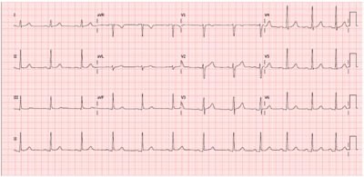
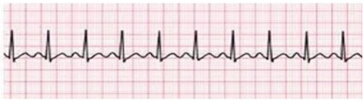
A Depressão ansiosa; introdução de ansiolítico não benzodiazepínico.
B Angina estável; introdução de AAS, atorvastatina e nitrato.
C Síndrome do pânico; antidepressivo serotoninérgico.
D Taquicardia por reentrada nodal; ablação cardíaca.
Questão 95 · Saúde do Idoso geriatria · Distanásia · Cuidados paliativos · 4000165549Homem, 82 anos de idade, acamado há 10 anos por demência vascular após episódio de AVC isquêmico extenso. É totalmente dependente para as atividades básicas da vida diária e não contactua com as pessoas há cerca de 1 ano. É cuidado pela lha. Há 2 anos apresenta disfagia para sólidos e há 6 meses para líquidos. Comparece ao Pronto-Socorro com história de queda do estado geral e recusa da alimentação via oral há 3 dias. No atendimento inicial, apresentava-se em mau estado geral, descorado ++/4+, desidratado +++/+4, com roncos de transmissão, FR 30 irpm, oximetria sem captura, com respiração ruidosa, extremidades frias e mal perfundidas, FC 130 bpm e PA 72 x 40 mmHg. A equipe da sala de emergência aborda a lha sobre a compreensão do quadro atual e ela entende que o pai está próximo ao nal da vida e não deseja que ele sofra, mas está muito preocupada por ele não estar conseguindo comer. Qual é a conduta com relação à alimentação nesta fase?
A Passar sonda nasoenteral para alimentação enteral.
B Introduzir soro de expansão e manutenção.
C Introduzir dieta assistida por via oral.
D Manter o paciente de jejum e sem soro.
Questão 96 · Diagnóstico · 4000165548Mulher de 34 anos de idade dá entrada no Pronto-Socorro com história de cefaleia, febre e confusão mental há 3 dias, associada a episódios em que permanecia parada, olhar xo e movimentos oromastigatórios automáticos, com duração de 2 minutos. Ao exame clínico estava confusa, febril, com rigidez de nuca, sem outros sinais localizatórios. A tomogra a de crânio mostrava hipoatenuação discreta e edema em lobo temporal à direita. O eletroencefalograma mostrava atividade periódica lateralizada. Qual é a principal hipótese diagnóstica e o exame confirmatório?
A Encefalite imuno mediada, solicitar anticorpos anti-NMDA no líquor.
B Encefalite herpética, PCR para herpes vírus no líquor.
C Endocardite bacteriana com embolização séptica, hemocultura e ecocardiograma.
D Neurotoxoplasmose, ressonância nuclear magnética de crânio.
Questão 97 · Neurologia · Trombólise Endovenosa · Trombectomia Mecânica · 4000165547Mulher de 62 anos de idade, diabética e tabagista, apresentou há 5 horas e 30 minutos diminuição de força nos membros superior e inferior esquerdos e fala empastada. Na sua chegada ao Pronto-Socorro de um hospital terciário, sua pressão arterial era 160 x 100 mmHg. A frequência cardíaca era de 88 bpm, rítmico e a glicemia capilar 220 mg/dL. A ausculta cardíaca era normal. O exame neurológico mostrou hemiplegia esquerda completa, desvio do olhar para a direita e heminegligência. A pontuação na escala de avaliação NIHSS ( tomogra a de crânio não mostrou sinais de hemorragia intracraniana. A pontuação na escala ASPECTS foi de 8. Qual deve ser a conduta neste atendimento inicial?
A Realizar angioressonância arterial de crânio e vasos cervicais e, se oclusão de artéria carótida cervical, indicar trombectomia mecânica.
B Realizar angiotomografia arterial de crânio e vasos cervicais e, se oclusão de artéria cerebral média, indicar trombectomia mecânica.
C Realizar angiotomografia arterial de crânio e vasos cervicais e, se oclusão de artéria cerebral média, indicar trombólise intravascular.
D Realizar angioressonância arterial de crânio e vasos cervicais e, se oclusão de artéria carótida intracraniana, indicar trombólise intravenosa.
Questão 98 · Tratamento no paciente adulto · 4000165546Mulher de 25 anos de idade, diabética em uso de insulina, dá entrada no serviço de emergência com queixa de náuseas, vômitos e dor abdominal. Ao exame clínico de entrada estava desidratada +++/4+, PA = 100 x 60 mmHg, FC = 120 bpm, Tempo de enchimento capilar = 6s. Restante do exame sem alterações. Foi iniciada expansão volêmica. Exames iniciais mostram: Glicemia = 440 mg/dL pH = 7,21 Bic = 13 mEq/L Na ⁺ = 120 mEq/L K = 2,8 mEq/L ⁺ Qual é a conduta com relação à insulinização neste momento?
A Insulina regular 10 UI endovenosa em bomba de infusão.
B Insulina regular 10 UI endovenosa em bolus.
C Insulina regular 10 U subcutânea.
D Não administrar insulina.
Questão 99 · Características da Dor · Enxaqueca · Neurologia · 4000165545Homem de 28 anos de idade apresenta há 2 anos cefaleia uma vez por semana de forte intensidade, unilateral, pulsátil, com foto e fonofobia e acompanhada por náuseas. Nega fenômenos visuais ou somestésicos. Há 6 meses associou outro tipo de cefaleia quase diariamente, bilateral, de fraca a moderada intensidade, em aperto, sem outros sintomas. Faz uso diário de dipirona e cetoprofeno e nos momentos de exacerbação da dor usa sumatriptano. Quais são os diagnósticos desse paciente?
A Cefaleia tensional e enxaqueca com aura.
B Enxaqueca com aura e cefaleia por abuso de medicações.
C Enxaqueca sem aura e cefaleia por abuso de medicações.
D Cefaleia tensional e enxaqueca sem aura.
Questão 100 · Of talmologia · Retinopatia Diabética · Retinopatia Hipertensiva · 4000165544Homem de 66 anos de idade chega à consulta referindo perda visual progressiva e indolor de olho há 06 meses. É hipertenso, diabético e dislipidêmico de longa data, com controle irregular das comorbidades. Realiza o seguinte exame. Selecione a alternativa com os achados deste exame: Respostas: 1 12 23 34 45 56 67 78 89 100
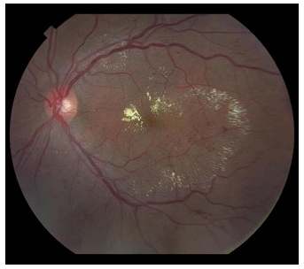
A Microhemorragias e exsudatos duros.
B Edema de papila e descolamento de retina regmatogênico
C Microcalcificações e mácula em cereja.
D Palidez de papila e exsudatos algodonosos.